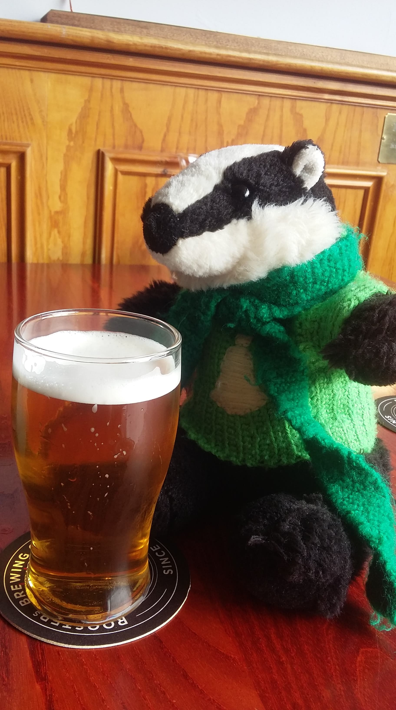

Every great society needs a mascot. Bob is ours. Decked out in YCG green, he accompanies us at practices, socials and meetings - lending a hand with a tone of stuff that only a small stuffed badger can. He's been kidnapped more times than we can count (sometimes by members of our own society!) but we always get him back in the end. Thankfully, Bob is extremely media-savvy: to see more of his adventures, follow him on Instagram and Facebook below
Alternatively, hang out in one of the many pubs around York - you'll be sure to bump into him eventually.
